1
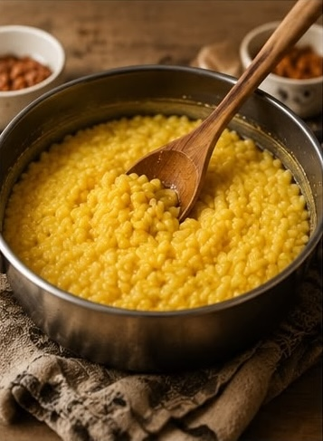
PREPARA IL RISO
Cuoci il riso con zafferano e sale, poi lascialo raffreddare fino a ottenere la consistenza perfetta per la lavorazione.
Sapori furoi dagli schemi
Ogni Arancino Stellato nasce da un percorso di passione, ricerca e maestria artigianale.
Ogni preparazione è studiata per trasformare la tradizione siciliana in un'esperienza di gusto sorprendente.
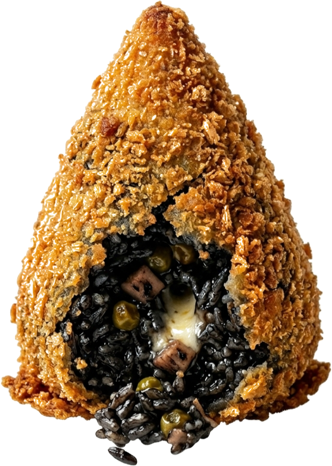
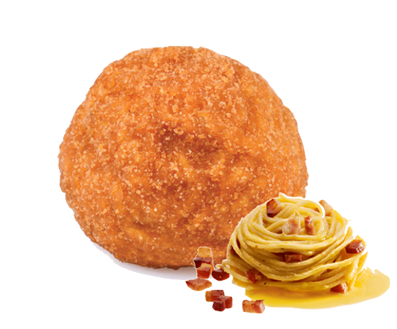
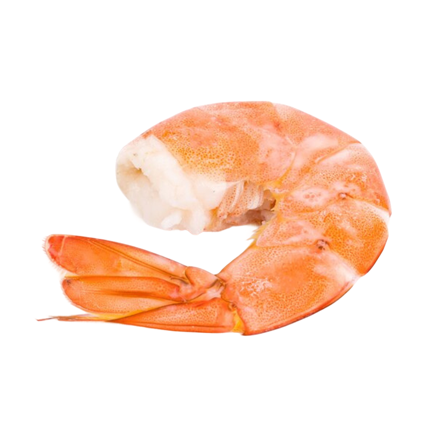
Due interpretazioni sorprendetni dell'arancino. Da una parte la cremosità della Carbonara, dall'altra l'eleganza marina del Mon Amour con riso di Venere, seppie e gamberi.
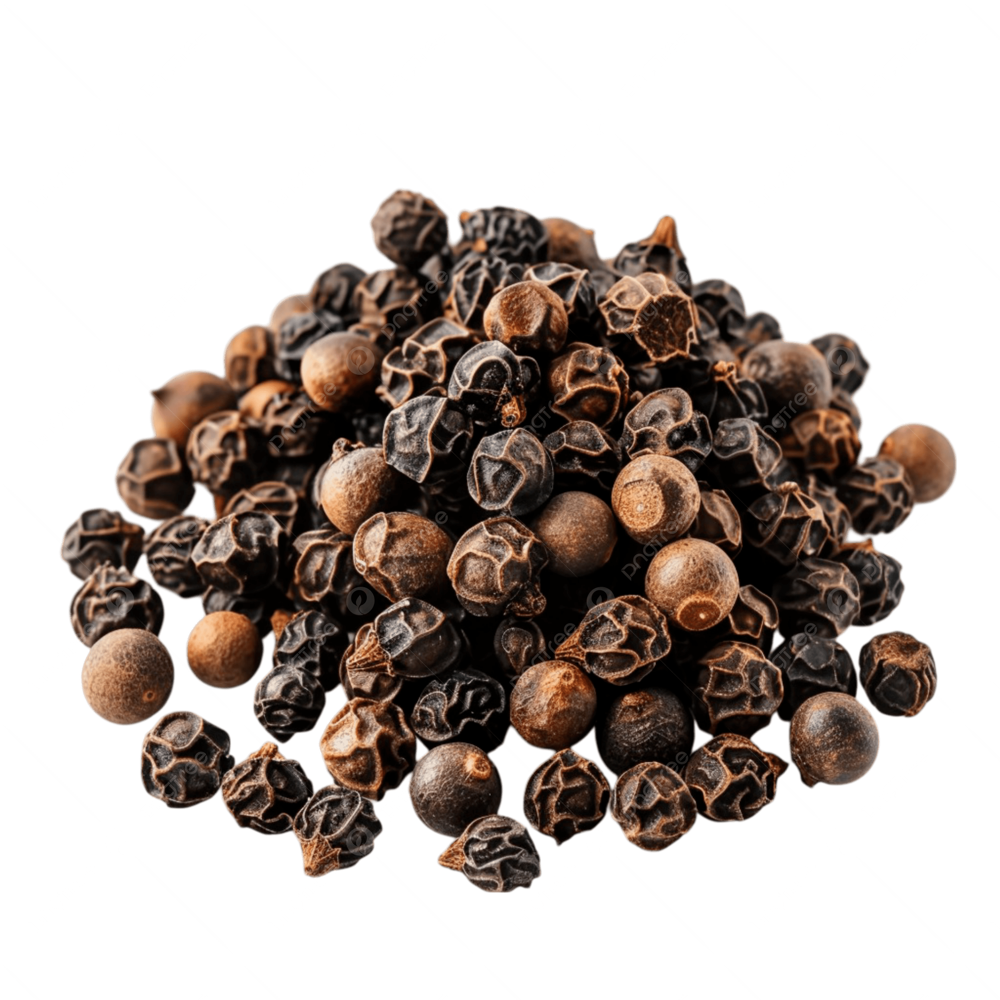
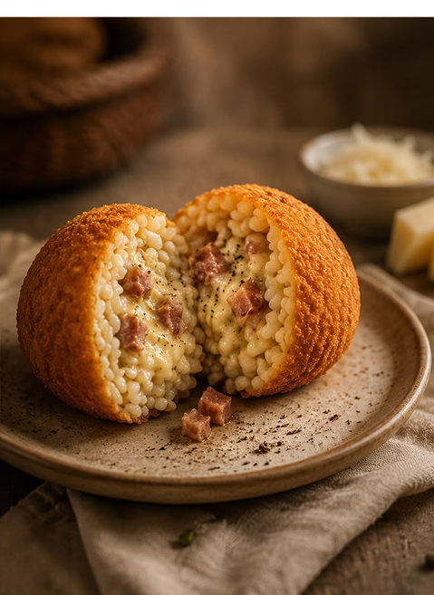
Guanciale croccante, crema vellutata e pecorino incontrano il riso in una versione sorprendente e irresistibile.
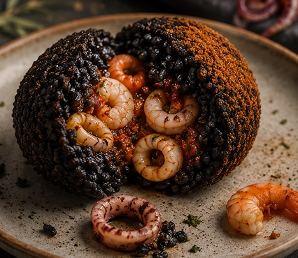
Il riso di venere racchiude un cuore di seppie e gamberetti, creando un equilibrio tra mare e tradizione siciliana, ideato dallo Chef Pietro D'Agostino.
| Carbonara | Mon Amour | |
|---|---|---|
| Intensità | ★★★★☆ | ★★★☆☆ |
| Cremosità | ★★★★★ | ★★★☆☆ |
| Piccantezza | ★★★☆☆ | ★☆☆☆☆ |
Delicato e raffinato, il gambero dona una nota marina elegante che conquista al primo assaggio.
Piccante al punto giusto, il pepe nero esalta ogni ingrediente con il suo profumo intenso e deciso.
TRADIZIONE E INNOVAZIONE
Due interpretazioni moderne dell’arancino siciliano. Scopri come nascono le nostre creazioni più iconiche.

Cuoci il riso con zafferano e sale, poi lascialo raffreddare fino a ottenere la consistenza perfetta per la lavorazione.
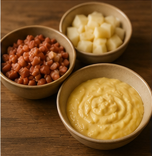
Unisci tuorlo d’uovo, pecorino e pepe nero per ottenere una crema ricca e vellutata.
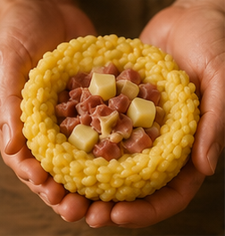
Aggiungi guanciale croccante e crema di carbonara per un cuore intenso e avvolgente.
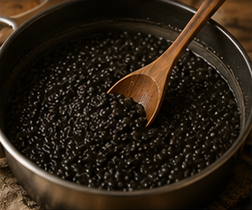
Cuoci il riso al nero di seppia per ottenere il caratteristico colore intenso e sapore marino.
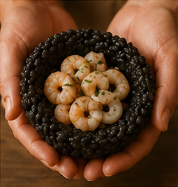
Salta i gamberi e uniscili a una base delicata per esaltare il gusto del mare.
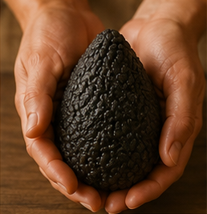
Modella il riso e inserisci il ripieno scelto: Carbonara oppure Nero di Seppia e Gamberi.
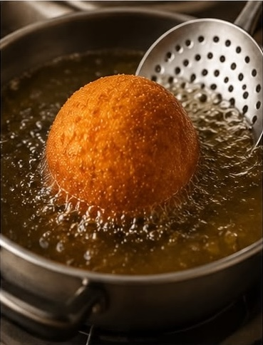
Passa gli arancini nella pastella e nel pangrattato fino a ottenere una copertura uniforme.
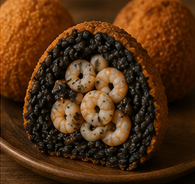
Friggi fino a doratura e servi caldi per esaltare il cuore cremoso e i sapori intensi.